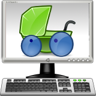

<div class="header"><h1 class="title">Gnome Nanny</h1></div>

<div class="main">

<div class="content"><ul>
	<li><em>Gnome Nanny</em> provides parental control in Edubuntu.</li>
	<li>Limit the amount of time kids spend on the computer in any period using the graphical schedule editor.</li>
	<li>Restrict access to undesirable web sites and download pre-defined access rules.</li>
</ul></div>

</div>


